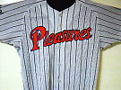

The Image Settings functions on the Advanced Mode tab of ScanGear (scanner driver) allow you to enhance the outline of the subjects, reduce dust/scratches and correct faded colors when scanning images.
Click (Arrow) of a function and select an item from the pop-up menu.
 Important
ImportantDo not apply these functions to images without moire, dust/scratches or faded colors. The color tone may be adversely affected.
See "Image Settings" for details and precautions on each function.
 Note
NoteSee "Scanning in Advanced Mode" to start the Advanced Mode tab of ScanGear and scan.
Set Image Adjustment to Auto, Photo, Magazine, Newspaper, or Document according to the document type.
None |
Auto |
Set Reduce Show-through to Low or High according to the degree of show-through or darkness of the base color.
None |
Low |
Set Unsharp Mask to ON.
OFF |
ON |
Set Descreen to ON.
OFF |
ON |
|  |
NotePrinted photos and pictures are displayed as a collection of fine dots. "Moire" is a phenomenon where uneven gradation or a stripe pattern appears when such photos or pictures printed with fine dots are scanned. Descreen is the function for reducing this moire effect.
Set Reduce Dust and Scratches to Low, Medium, or High according to the degree of dust and scratches.
None |
Medium |
Set Fading Correction to Low, Medium, or High according to the degree of fading or colorcast.
None |
Medium |
Set Grain Correction to Low, Medium, or High according to the degree of graininess.
None |
Medium |
 |
Set Backlight Correction to Low, Medium, or High according to the degree of backlight.
None |
Medium |
Set Gutter Shadow Correction to Low, Medium, or High according to the degree of shadows.
None |
Medium |